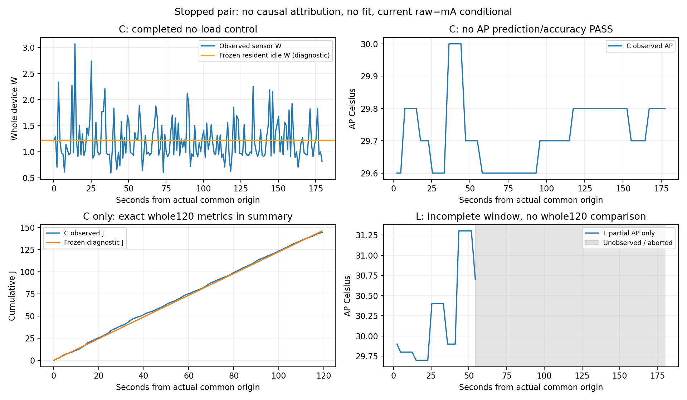

실측 기록입니다. 대조 쌍은 stopped_no_resume. L전체120초·C–L 차이·독립 확인·정확도 PASS는 미완료입니다.
한국어 보고서 · 요약 · 검증 · 센서 CSV · L 부분 lane CSV
| 항목 | C 무부하 | L 등록 부하 |
|---|---|---|
| 상태 | 앱 정상 cleanup | 화면 조회2초 timeout, 앱 cleanup 미확인 |
| 본 요청 | 0 | 시작/output/persist/worker/lane 각24, 최종 품질 미회수 |
| 전체120초 J | 관측145.578444 / 동결식147.052011 / 차이+1.473566 | null (전체창 미회수) |
| 시작 AP host 승인 | 29.6°C | 29.9°C |
| 모형 범위 | 개발 시작 범위 밖, 진단 계산. strict 미승격/experiment_ready=false | |
C pre5–30초1.295715W → late90–120초1.114261W. 무부하 시간 변화의 관측이며 원인·범용 계수 미식별. L약1.510초 CG_DC는 callback event 경계의 부분 점유 추정입니다.

SVG. 전류 raw=mA 조건부/절대 정확도 미인증. C냉각 끝0.826초 전력 결측/null. 누적 그림은 센서 표본시각까지, 정확한120초 J는 표에 별도 표시합니다.
owner host cleanup·대상 프로세스 부재 확인. 연결 소실 증거 없음. 다음 PC 작업: 화면 조회 partial stdout/marker·인접 지연·종료 경계 진단.